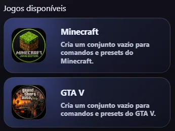
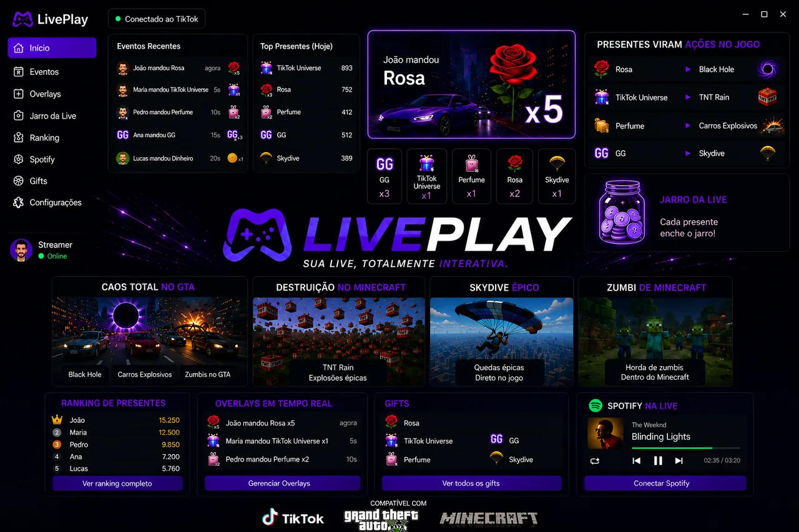
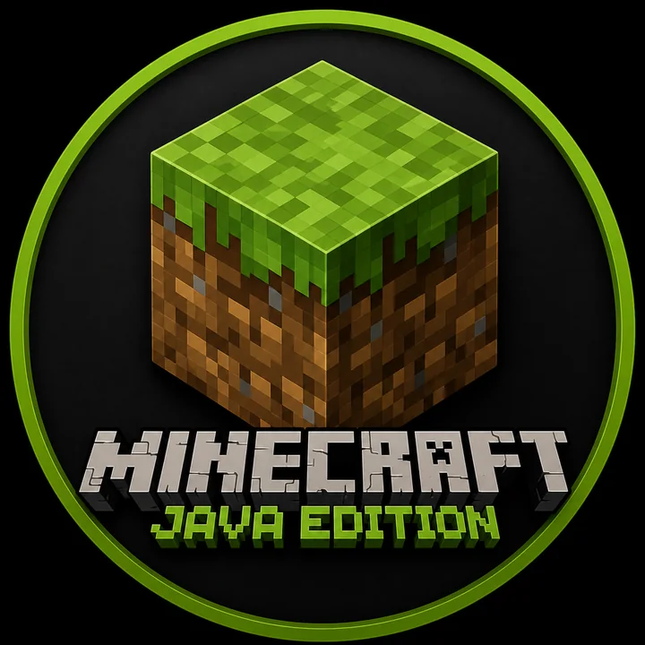
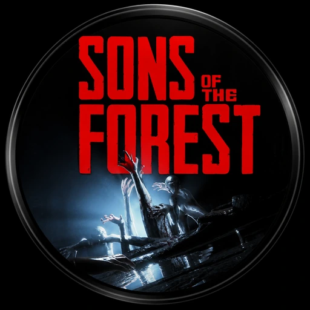
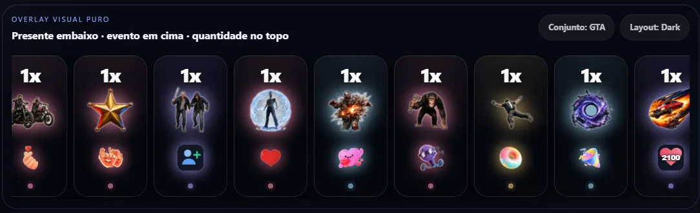
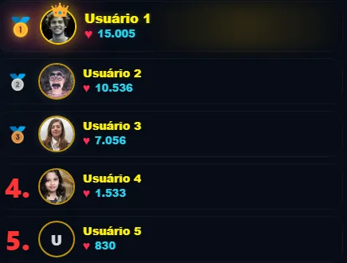
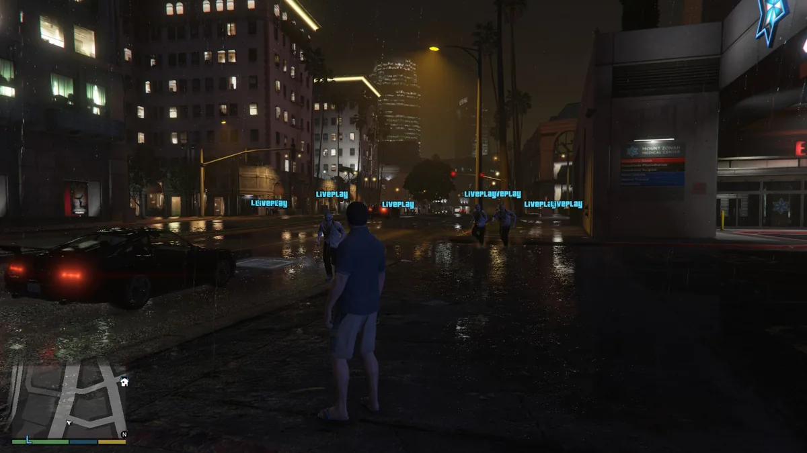
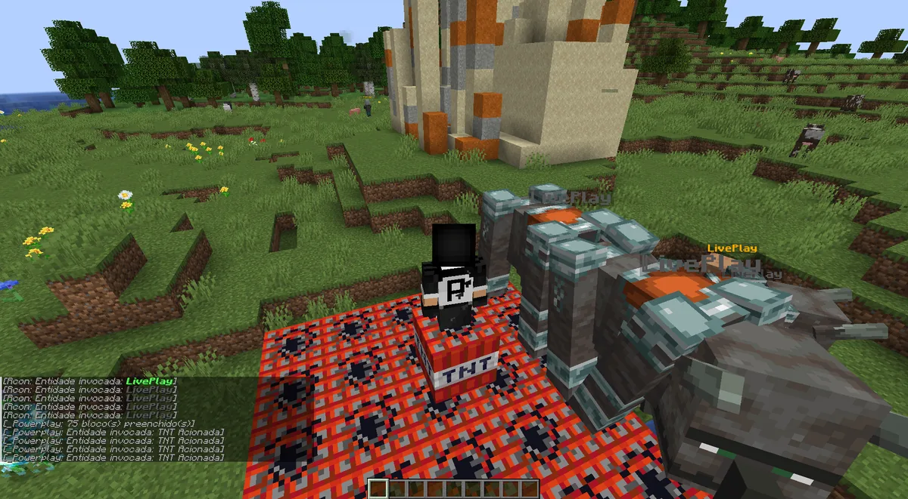
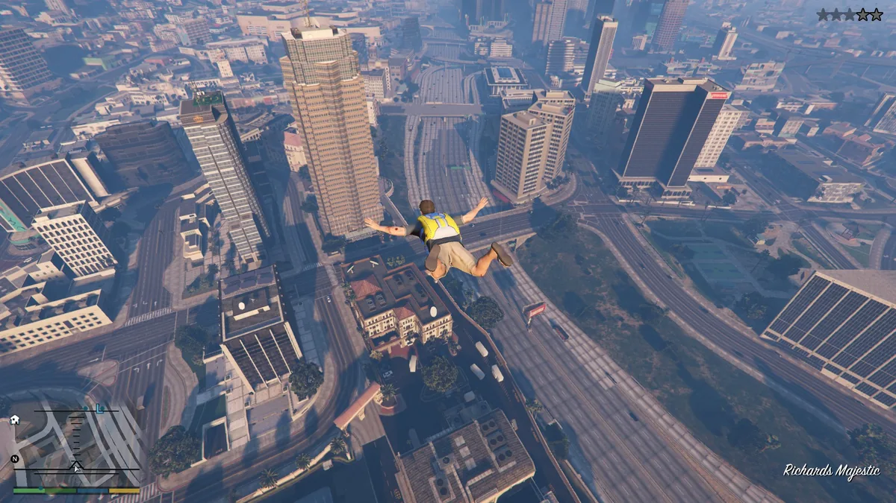
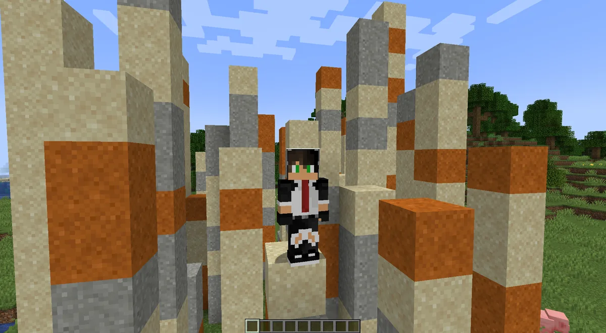

🎮
Jogos integrados
Use conjuntos e modelos por jogo para acionar comandos, efeitos e eventos sem perder organização.

Transforme presentes, likes, follows, chats e eventos da live em comandos, overlays, alertas, ranks, roletas, cofrinho, vídeos e automações dentro de Minecraft, GTA V e Sons Of The Forest.

O LivePlay junta automações, overlays e integrações de jogos em uma experiência profissional para criadores.
Use conjuntos e modelos por jogo para acionar comandos, efeitos e eventos sem perder organização.
Presentes, likes, follows, chats, shares e eventos alimentam automações e overlays em tempo real.
Links públicos para OBS e TikTok Live Studio com alertas, ranks, vídeos, cofrinho e efeitos visuais.

Comandos, mobs, servidores, plugins e automações para transformar a live em gameplay interativo.
Eventos da live podem causar caos no jogo com bridge própria, efeitos e comandos em tempo real.

Integração via BepInEx para acionar canibais, mutantes, horário do jogo, cura e presets de sobrevivência.
Ranks de presentes, moedas, combos, likes e competições para manter o público participando.
Transforme presentes em progresso visual, metas, moedas, top viewers e efeitos premium.
Login, PRO/FREE, backup na nuvem, restauração e proteção para usar o LivePlay com segurança.
Uma prévia rápida do app funcionando: presentes acionando comandos, overlays aparecendo no OBS e jogos respondendo em tempo real com ranks, metas e eventos da live.
Do painel aos overlays, do Minecraft ao GTA V e Sons Of The Forest: transforme presentes e eventos da live em gameplay, caos e engajamento ao vivo.
Conecte sua live, acompanhe eventos, veja status, modelos ativos e envie testes rápidos sem sair do LivePlay.

Layouts premium para OBS e TikTok Live Studio com atualização em tempo real.

Rankings ao vivo para aumentar disputa e engajamento da audiência.
Transforme gifts em progresso visual e metas durante a live.
Eventos da live podem criar efeitos extremos e momentos virais.

Comandos customizados para trollagens, desafios e ações no jogo.

Presentes e eventos podem invocar entidades, TNT e desafios no servidor.
Gifts e eventos podem chamar inimigos, alternar horário, curar o player e criar momentos de tensão na live.
O público pode causar caos, desafios, explosões, mobs, mutantes e efeitos em tempo real durante a gameplay.


O FREE libera o essencial. O PRO desbloqueia recursos premium para lives mais fortes.
Ideal para testar o LivePlay e configurar os primeiros recursos.
Libere overlays, integrações premium, roleta, desafios, Spotify, cofrinho avançado e mais.
Resumo dos limites e recursos que aparecem na tela de Planos do app.
| Recurso | FREE | PRO |
|---|---|---|
| Presets ativos por jogo — Minecraft | 13 | 60 |
| Presets ativos por jogo — GTA V | 8 | 60 |
| Presets ativos por jogo — Sons Of The Forest | 8 | 60 |
| Conjuntos de modelos | 3 | 20 |
| Vídeos / Animações | 3 | 20 |
| Metas da live | 1 | 7 |
| Servidores Minecraft | 1 | 4 |
| Perfis salvos | 1 | 2 |
| Eventos recentes | Sim | Sim |
| Ranks da live | Sim | Sim |
| Rank mensal | Não | Sim |
| Tempo da Live | Sim | Sim |
| Cofrinho / Jarro premium | Não | Sim |
| Desafios | Não | Sim |
| Spotify | Não | Sim |
| Sistema de pontos | Não | Sim |
| Roleta | Não | Sim |
| Chat no jogo Minecraft | Sim | Sim |
| Chat com voz automática | Não | Sim |
| Plugins premium Minecraft | Não | Sim |
| Alertas padrão | Sim | Sim |
| Editor avançado dos Alertas | Não | Sim |
| Páginas nos Alertas | Não | Sim |
Sim. O LivePlay gera links de overlay para usar como fonte de navegador no OBS.
Sim. Você pode usar os overlays como fonte de navegador também no TikTok Live Studio.
Sim. O LivePlay possui integração com Sons Of The Forest via mod local/BepInEx para enviar comandos e presets do jogo.
Sim. O plano FREE libera recursos básicos para começar.
Sim. O instalador possui atualização automática para receber novas versões.
Sim, usando sua conta LivePlay e backup na nuvem. A conta possui controle de sessão para segurança.
Não. O app tem modelos, presets, backups e configuração guiada para acelerar o primeiro uso.
Clique em “Assinar PRO”, informe o email da sua conta LivePlay e conclua o pagamento no Mercado Pago. Depois, abra o app e entre com o mesmo email para sincronizar a licença.
Instale no Windows, faça login e conecte sua live TikTok. Para assinar o PRO pelo site, use o botão “Assinar PRO” e o mesmo email do app.
Informe o email que você usa ou vai usar no app. O site gera o mesmo checkout seguro do app pelo backend do LivePlay.
Abrir checkout manualmente Depois da aprovação, abra o LivePlay, entre na mesma conta e use “sincronizar licença” se o PRO ainda não aparecer.